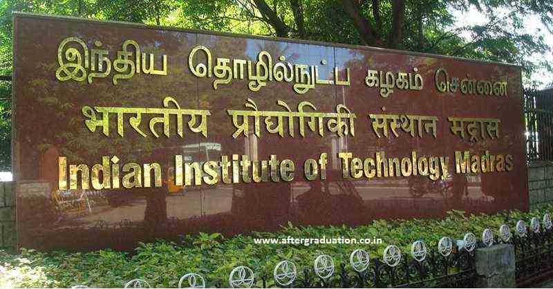

First slide label
Second slide label

IIT Madras BTech Admissions 2023 are based on the JEE Advanced scores followed by JoSAA counselling. JoSAA 2023 registration process is ongoing and last date to apply is June 28. JoSAA will release 1st round of seat allotment on June 30. JoSAA Counselling 2023 will be done in a total of 6 rounds and for IIT Madras BTech Admission NTA will release the round wise BTech cutoff.
BTech is the flagship program of IIT Madras offered for a duration of 4 years. The college offer BTech program in a total of 12 disciplines. IIT Madras B.Tech program include Aerospace, Computer Science &, Chemical, and Mechanical Engineering. However, the other basic eligibility and selection details for the program are mentioned below. Applicants should have completed his/her 10+2 from a recognized board of education with Physics, Chemistry, English, and Mathematics as main subjects. Also, the applicants should have secured at least 60% marks in aggregate in the 10+2 level or equivalent qualifying examination. Selection to the B.Tech program is strictly done on the basis of the marks secured by the candidates in JEE Advanced entrance exam followed by the JoSAA Counseling Process. The seat allotment is based on the college cutoff and the candidate's preference of courses and colleges.IIT Madras BTech Cutoff 2023 will be released soon by JoSAA. Admissions will be granted on the basis of cutoff marks for respective specialization of the BTech program. The cutoff depends on various factors such as rank secured in the JEE Advanced examination, availability of seats, choice filling, reservation criteria, etc.